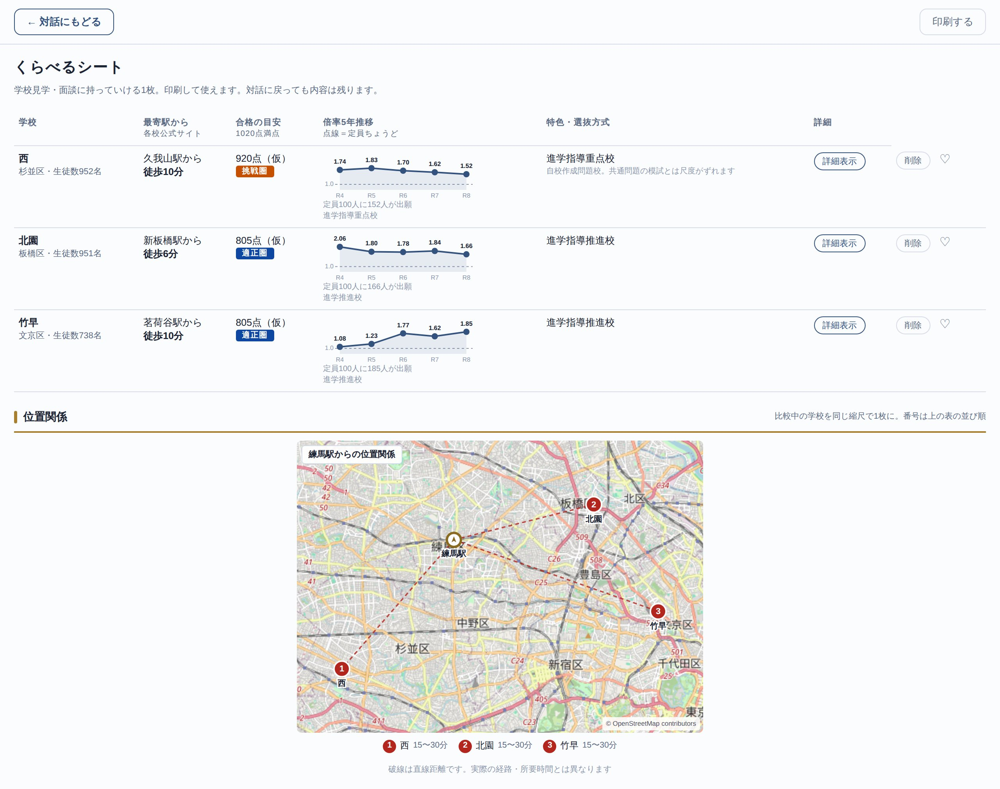
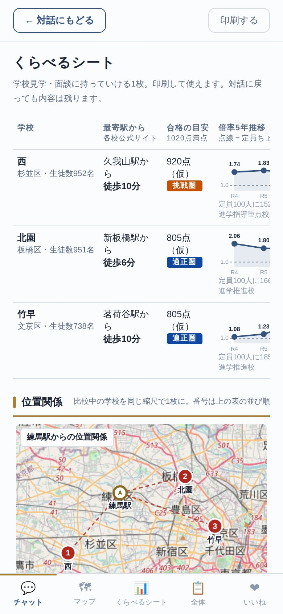

<meta charset="utf-8">
<meta name="viewport" content="width=device-width, initial-scale=1">
<meta name="robots" content="noindex,nofollow">
<title>進路コンパス — チーム内プレビュー</title>
<style>
  :root{
    --bg:#E7EBF2; --surface:#FBFCFE; --line:#D7DDE8; --ink:#1A2333;
    --muted:#5C6B84; --faint:#8B97AC; --accent:#33527E; --brass:#A8873E;
    --shadow:0 10px 30px rgba(26,35,51,.10);
  }
  @media (prefers-color-scheme:dark){
    :root{
      --bg:#0B101C; --surface:#141B2A; --line:#2B3650; --ink:#E8ECF4;
      --muted:#93A1B9; --faint:#6C7A93; --accent:#7FA3D8; --brass:#C9A961;
      --shadow:0 10px 30px rgba(0,0,0,.35);
    }
  }
  *{box-sizing:border-box}
  body{margin:0;min-height:100vh;padding:24px 16px 48px;
       background:var(--bg);color:var(--ink);
       font-family:system-ui,-apple-system,"Hiragino Sans","Noto Sans JP",sans-serif}
  .wrap{max-width:880px;margin:0 auto;display:flex;flex-direction:column;gap:22px;align-items:center}
  .card{width:100%;max-width:520px;background:var(--surface);border:1px solid var(--line);border-radius:16px;
        padding:28px 26px;box-shadow:var(--shadow)}
  h1{font-size:20px;margin:0 0 6px}
  p{font-size:14px;line-height:1.8;color:var(--muted);margin:0 0 16px}
  a.btn{display:inline-block;background:var(--accent);color:var(--surface);text-decoration:none;
        padding:12px 22px;border-radius:999px;font-size:14px;font-weight:600}
  .note{font-size:12px;color:var(--faint);line-height:1.7;margin-top:18px}

  /* ---------- 使い方 ---------- */
  .howto{width:100%;background:var(--surface);border:1px solid var(--line);border-radius:16px;
         padding:28px 26px;box-shadow:var(--shadow)}
  .howto h2{font-size:17px;margin:0 0 4px;letter-spacing:.04em}
  .howto h2::before{content:"";display:inline-block;width:3px;height:15px;background:var(--brass);
                    border-radius:2px;margin-right:9px;vertical-align:-2px}
  .lead{font-size:13px;margin:0 0 22px}

  .steps{list-style:none;margin:0 0 28px;padding:0;display:grid;gap:16px;
         grid-template-columns:repeat(3,minmax(0,1fr))}
  .steps li{border:1px solid var(--line);border-radius:12px;padding:16px 15px 15px;background:transparent}
  .num{display:inline-flex;align-items:center;justify-content:center;width:24px;height:24px;
       border-radius:50%;background:var(--accent);color:var(--surface);
       font-size:12px;font-weight:700;margin-bottom:9px}
  .steps h3{font-size:14px;margin:0 0 6px;line-height:1.5}
  .steps p{font-size:12.5px;line-height:1.75;margin:0}
  @media (max-width:640px){ .steps{grid-template-columns:1fr} }

  .shots-ttl{font-size:14px;margin:0 0 4px}
  .shots{display:grid;gap:18px;margin:0;padding:0;
         grid-template-columns:minmax(0,2fr) minmax(0,1fr);align-items:start}
  .shot{margin:0}
  .shot a{display:block;border-radius:10px}
  .shot img{display:block;width:100%;height:auto;border:1px solid var(--line);border-radius:10px;
            background:var(--bg)}
  .shot a:hover img,.shot a:focus-visible img{border-color:var(--accent)}
  .shot figcaption{font-size:11.5px;color:var(--faint);margin-top:7px;text-align:center}
  @media (max-width:640px){
    .shots{grid-template-columns:1fr}
    .shot.mobile img{max-width:280px;margin:0 auto}
  }
</style>

<main class="wrap">
<div class="card">
  <h1>進路コンパス</h1>
  <p>都知事杯オープンデータ・ハッカソン2026 / Team WINS<br>
     完成形イメージ共有用のプロトタイプです。</p>
  <p><a class="btn" href="./prototype/">デモを開く</a></p>
  <p class="note">
    検証中のプロトタイプであり、一般公開・実運用を目的としたものではありません。
    会話はLLMではないルールベースの疑似対話で、レベル帯の一部はデモ用の仮値です。
    進路の判断には学校公式サイト・説明会の情報をご確認ください。合否の判定は行いません。<br>
    出典: 東京都教育委員会 公開資料（学校一覧・入学者選抜応募状況）を加工。
  </p>
</div>

<section class="howto">
  <h2>使い方</h2>
  <p class="lead">3ステップ、3分ほどで候補が出ます。</p>

  <ol class="steps">
    <li>
      <span class="num">1</span>
      <h3>会話で条件を答える</h3>
      <p>最寄り駅 → 通学時間 → 内申点（5教科・実技）→ 当日点 → 部活や希望を、順に聞かれるまま入力します。「バスケがやりたい」「制服がない学校がいい」のような言葉でかまいません。</p>
    </li>
    <li>
      <span class="num">2</span>
      <h3>候補を見くらべる</h3>
      <p>1020点満点の目安で<b>安全圏・適正圏・挑戦圏</b>に分けて提案します。「通学の近さ / 大学進学 / いま届きそうなところ」で並べ替え、部活動から絞り込むこともできます。</p>
    </li>
    <li>
      <span class="num">3</span>
      <h3>くらべるシートにまとめる</h3>
      <p>気になった学校の「＋ くらべるシートに追加」を押すと1枚にまとまります。合格の目安・倍率5年推移・自宅最寄駅からの地図・制服・部の実績が並び、<b>A4で印刷</b>して説明会に持っていけます。</p>
    </li>
  </ol>

  <h3 class="shots-ttl">くらべるシートの表示</h3>
  <p class="lead">同じ内容が、画面の広さに合わせて並び替わります。</p>
  <div class="shots">
    <figure class="shot desktop">
      <a href="./assets/landing/cmp-desktop.jpg" target="_blank" rel="noopener">
        
      </a>
      <figcaption>デスクトップ表示（画像をクリックで拡大）</figcaption>
    </figure>
    <figure class="shot mobile">
      <a href="./assets/landing/cmp-mobile.jpg" target="_blank" rel="noopener">
        
      </a>
      <figcaption>モバイル表示（画像をクリックで拡大）</figcaption>
    </figure>
  </div>
</section>
</main>
